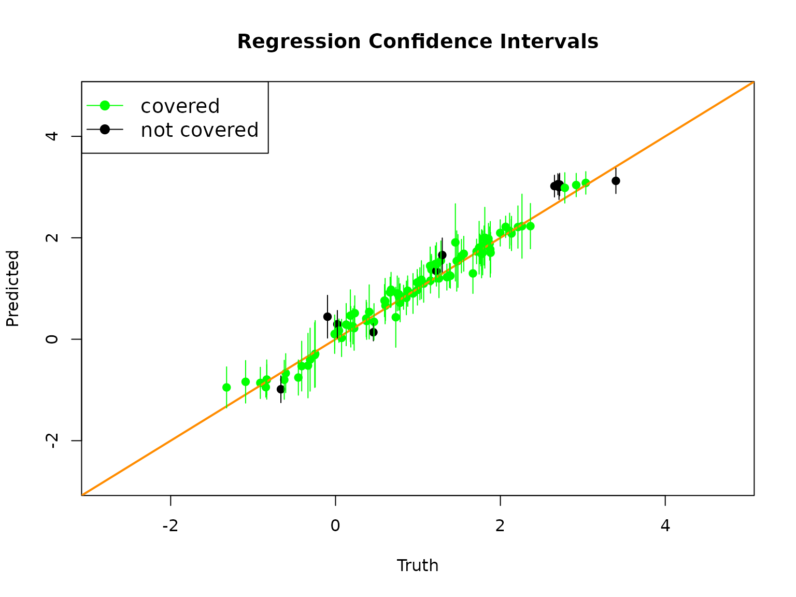
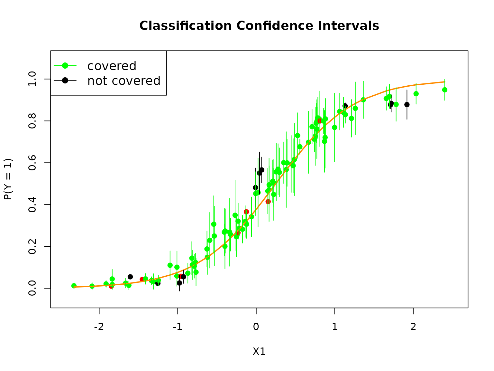
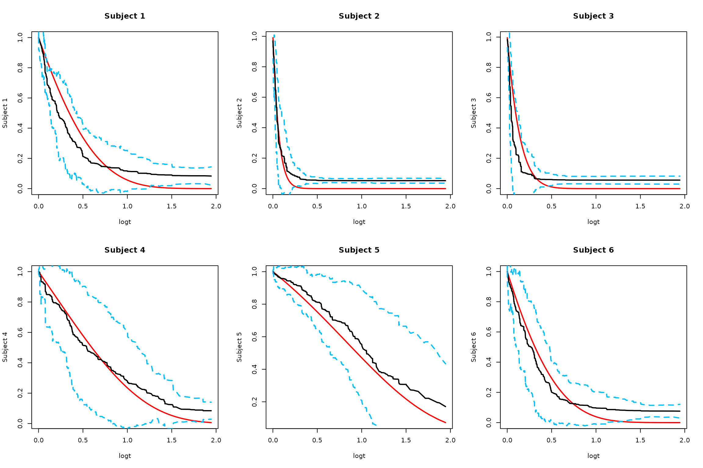
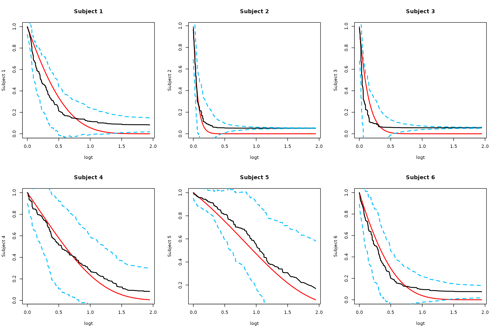
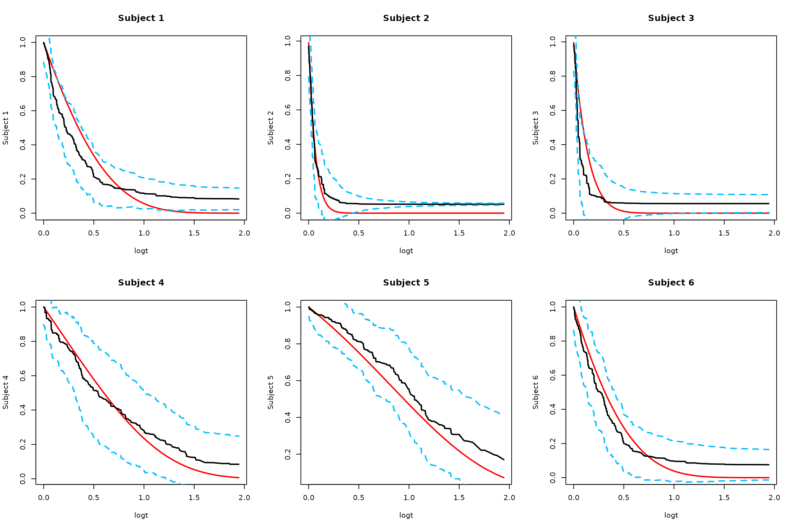
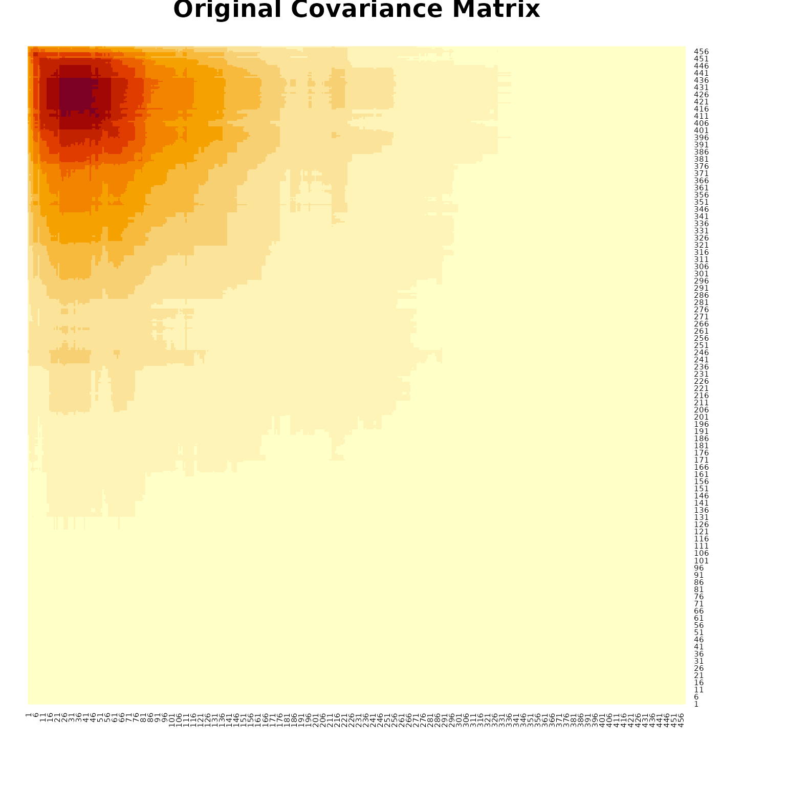

Confidence Interval Estimation
Confidence-Interval.RmdIntroduction
Confidence interval estimation is essential for understanding the uncertainty in random forest predictions. The RLT package provides comprehensive tools for estimating confidence intervals across different types of models, including regression, classification, and survival analysis.
Variance Estimation for Regression
For regression models, RLT can estimate prediction variance and construct confidence intervals using the out-of-bag samples.
library(RLT)
#> RLT and Random Forests v4.2.6
#> pre-release at github.com/teazrq/RLT
# Generate regression data
set.seed(1)
trainn = 1000
testn = 100
n = trainn + testn
p = 20
# Generate features
X1 = matrix(rnorm(n*p/2), n, p/2)
X2 = matrix(as.integer(runif(n*p/2)*3), n, p/2)
X = data.frame(X1, X2)
for (j in (p/2 + 1):p) X[,j] = as.factor(X[,j])
# Generate response
y = 1 + X[, 1] + rnorm(n)
# Split data
trainX = X[1:trainn, ]
trainY = y[1:trainn]
testX = X[(trainn+1):n, ]
testY = y[(trainn+1):n]
# Order test data for visualization
xorder = order(testX[, 1])
testX = testX[xorder, ]
testY = testY[xorder]Regression Confidence Intervals
# Fit RLT model with variance estimation
RLTfit <- RLT(trainX, trainY, model = "regression",
ntrees = 2000, mtry = p, nmin = 40,
split.gen = "best", resample.prob = 0.5,
param.control = list("var.ready" = TRUE,
"resample.track" = TRUE),
verbose = TRUE)
#> Warning in RLT(trainX, trainY, model = "regression", ntrees = 2000, mtry = p, : resample.replace is set to FALSE due to var.ready
#> Regression Random Forest ...
#> ---------- Parameters Summary ----------
#> (N, P) = (1000, 20)
#> # of trees = 2000
#> (mtry, nmin) = (20, 40)
#> split generate = Best
#> sampling = 0.5 w/o replace
#> (Obs, Var) weights = (No, No)
#> importance = none
#> reinforcement = No
#> ----------------------------------------
# Predict with variance estimation
RLTPred <- predict(RLTfit, testX, var.est = TRUE, keep.all = TRUE)
# Calculate confidence intervals
upper = RLTPred$Prediction + 1.96*sqrt(RLTPred$Variance)
lower = RLTPred$Prediction - 1.96*sqrt(RLTPred$Variance)
cover = (1 + testX$X1 > lower) & (1 + testX$X1 < upper)
# Plot results
plot(1 + testX$X1, RLTPred$Prediction, pch = 19,
col = ifelse(is.na(cover), "red", ifelse(cover, "green", "black")),
xlab = "Truth", ylab = "Predicted",
xlim = c(min(y)+1, max(y)-1), ylim = c(min(y)+1, max(y)-1),
main = "Regression Confidence Intervals")
abline(0, 1, col = "darkorange", lwd = 2)
# Add confidence intervals
for (i in 1:testn)
segments(1+testX$X1[i], lower[i], 1+testX$X1[i], upper[i],
col = ifelse(is.na(cover[i]), "red", ifelse(cover[i], "green", "black")))
legend("topleft", c("covered", "not covered"), col = c("green", "black"),
lty = 1, pch = 19, cex = 1.2)
Variance Estimation for Classification
For classification models, RLT can estimate variance for class probabilities and construct confidence intervals.
# Generate classification data
set.seed(1)
trainn <- 1000
testn <- 100
n <- trainn + testn
p <- 20
# Generate features
X1 <- matrix(rnorm(n * p / 2), n, p / 2)
X2 <- matrix(as.integer(runif(n * p / 2) * 4), n, p / 2)
X <- data.frame(X1, X2)
X[, (p / 2 + 1):p] <- lapply(X[, (p / 2 + 1):p], as.factor)
# Generate outcomes
logit <- function(x) exp(x) / (1 + exp(x))
y <- as.factor(rbinom(n, 1, prob = logit(-0.5 + 2*X[, 1])))
# Split data
trainX = X[1:trainn, ]
trainY = y[1:trainn]
testX = X[(trainn+1):n, ]
testY = y[(trainn+1):n]
# Order test data
xorder = order(testX[, 1])
testX = testX[xorder, ]
testY = testY[xorder]
testprob = logit(-0.5 + 2*testX$X1)Classification Confidence Intervals
# Fit classification model with variance estimation
RLTfit <- RLT(trainX, trainY, model = "classification",
ntrees = 2000, mtry = p, nmin = 20,
split.gen = "random", resample.prob = 0.5,
param.control = list("var.ready" = TRUE, "resample.track" = TRUE),
verbose = TRUE)
#> Warning in RLT(trainX, trainY, model = "classification", ntrees = 2000, : resample.replace is set to FALSE due to var.ready
#> Classification Random Forest ...
#> ---------- Parameters Summary ----------
#> (N, P) = (1000, 20)
#> # of trees = 2000
#> (mtry, nmin) = (20, 20)
#> split generate = Random, 1
#> sampling = 0.5 w/o replace
#> (Obs, Var) weights = (No, No)
#> importance = none
#> reinforcement = No
#> ----------------------------------------
# Predict with variance estimation
RLTPred <- predict(RLTfit, testX, var.est = TRUE, keep.all = TRUE)
# Calculate confidence intervals for P(Y = 1)
upper = RLTPred$Prob[, 2] + 1.96*sqrt(RLTPred$Variance[,2])
#> Warning in sqrt(RLTPred$Variance[, 2]): NaNs produced
lower = RLTPred$Prob[, 2] - 1.96*sqrt(RLTPred$Variance[,2])
#> Warning in sqrt(RLTPred$Variance[, 2]): NaNs produced
cover = (testprob > lower) & (testprob < upper)
# Plot results
plot(testX$X1, RLTPred$Prob[,2], pch = 19,
col = ifelse(is.na(cover), "red", ifelse(cover, "green", "black")),
xlab = "X1", ylab = "P(Y = 1)",
xlim = c(min(testX$X1)-0.1, max(testX$X1)+0.1),
ylim = c(min(RLTPred$Prob[,1])-0.1, max(RLTPred$Prob[,1])+0.1),
main = "Classification Confidence Intervals")
lines(testX$X1, testprob, col = "darkorange", lwd = 2)
# Add confidence intervals
for (i in 1:testn)
segments(testX$X1[i], lower[i], testX$X1[i], upper[i],
col = ifelse(is.na(cover[i]), "red", ifelse(cover[i], "green", "black")))
legend("topleft", c("covered", "not covered"), col = c("green", "black"),
lty = 1, pch = 19, cex = 1.2)
Survival Analysis Confidence Bands
For survival analysis, RLT provides sophisticated methods for constructing confidence bands around survival curves.
# Generate survival data
set.seed(2)
n = 600
p = 20
X = matrix(rnorm(n*p), n, p)
# Create survival times
xlink <- function(x) exp(x[, 1] + x[, 3]/2)
FT = rexp(n, rate = xlink(X))
CT = pmin(6, rexp(n, rate = 0.25))
Y = pmin(FT, CT)
Censor = as.numeric(FT <= CT)
# Generate test data
ntest = 15
testx = matrix(rnorm(ntest*p), ntest, p)
# Calculate true survival function
timepoints = sort(unique(Y[Censor==1]))
SurvMat = matrix(NA, nrow(testx), length(timepoints))
exprate = xlink(testx)
for (j in 1:length(timepoints)) {
SurvMat[, j] = 1 - pexp(timepoints[j], rate = exprate)
}Survival Model Fitting
# Fit survival model
RLTfit <- RLT(X, Y, Censor, model = "survival",
ntrees = 2000, nmin = 20, mtry = 20, split.gen = "random",
resample.prob = 0.5, resample.replace = FALSE, nsplit = 5,
param.control = list(split.rule = "logrank", "var.ready" = TRUE),
importance = FALSE, verbose = TRUE, ncores = 1)
#> Fitting Survival Forest...
#> ---------- Parameters Summary ----------
#> (N, P) = (600, 20)
#> # of trees = 2000
#> (mtry, nmin) = (20, 20)
#> split generate = Random, 5
#> sampling = 0.5 w/o replace
#> (Obs, Var) weights = (No, No)
#> importance = none
#> reinforcement = No
#> ----------------------------------------
# Predict with variance estimation
RLTPred <- predict(RLTfit, testx, ncores = 1, var.est = TRUE)Confidence Band Methods
RLT provides several approaches for constructing confidence bands:
1. Naive Monte Carlo Approach
alpha = 0.05
# Original Monte Carlo approach without smoothing
SurvBand = get.surv.band(RLTPred, alpha = alpha, approach = "eigen-th-mc")
# Plot results for first few subjects
par(mfrow = c(2, 3))
logt = log(1 + timepoints)
for (i in 1:min(6, ntest)) {
# Truth
plot(logt, SurvMat[i, ], type = "l", lwd = 2, col = "red",
ylab = paste("Subject", i), main = paste("Subject", i))
# Estimated survival
lines(logt, RLTPred$Survival[i,], lwd = 2, col = "black")
# Naive confidence bands
lines(logt, SurvBand[[i]]$lower[,1], lty = 2, lwd = 2, col = "deepskyblue")
lines(logt, SurvBand[[i]]$upper[,1], lty = 2, lwd = 2, col = "deepskyblue")
}
2. Smoothed Monte Carlo Approach
# Monte Carlo approach using smoothed rescaled covariance matrix
SurvBand = get.surv.band(RLTPred, alpha = alpha, approach = "smoothed-mc", nsim = 1000)
#> Warning: no DISPLAY variable so Tk is not available
#> Warning in rgl.init(initValue, onlyNULL): RGL: unable to open X11 display
#> Warning: 'rgl.init' failed, will use the null device.
#> See '?rgl.useNULL' for ways to avoid this warning.
# Plot results
par(mfrow = c(2, 3))
logt = log(1 + timepoints)
for (i in 1:min(6, ntest)) {
# Truth
plot(logt, SurvMat[i, ], type = "l", lwd = 2, col = "red",
ylab = paste("Subject", i), main = paste("Subject", i))
# Estimated survival
lines(logt, RLTPred$Survival[i,], lwd = 2, col = "black")
# Smoothed confidence bands
lines(logt, SurvBand[[i]]$lower[,1], lty = 2, lwd = 2, col = "deepskyblue")
lines(logt, SurvBand[[i]]$upper[,1], lty = 2, lwd = 2, col = "deepskyblue")
}
3. Smoothed Low-rank Monte Carlo
# Low rank smoothed approach with adaptive Bonferroni critical value
SurvBand = get.surv.band(RLTPred, alpha = alpha, approach = "smoothed-lr", r = 5)
# Plot results
par(mfrow = c(2, 3))
logt = log(1 + timepoints)
for (i in 1:min(6, ntest)) {
# Truth
plot(logt, SurvMat[i, ], type = "l", lwd = 2, col = "red",
ylab = paste("Subject", i), main = paste("Subject", i))
# Estimated survival
lines(logt, RLTPred$Survival[i,], lwd = 2, col = "black")
# Low-rank confidence bands
lines(logt, SurvBand[[i]]$lower[,1], lty = 2, lwd = 2, col = "deepskyblue")
lines(logt, SurvBand[[i]]$upper[,1], lty = 2, lwd = 2, col = "deepskyblue")
}
Covariance Matrix Visualization
# Visualize covariance matrices
i = 5 # Choose a subject
ccov = RLTPred$Cov[,,i]
# Original covariance matrix
heatmap(ccov[rev(1:nrow(ccov)),], Rowv = NA, Colv = NA, symm = TRUE,
main = "Original Covariance Matrix")
# Note: The smoothed covariance approximation code is used internally
# in the get.surv.band function for better numerical stabilityKey Points
- Regression: Variance estimation provides confidence intervals for continuous predictions
- Classification: Variance estimation provides confidence intervals for class probabilities
- Survival: Multiple approaches for confidence bands around survival curves
-
Methods:
- Naive Monte Carlo: Simple but may be computationally intensive
- Smoothed Monte Carlo: Uses smoothed covariance for better numerical stability
- Low-rank Monte Carlo: Efficient approach with adaptive critical values
- Coverage: Confidence intervals should cover the true values with the specified confidence level
Summary
The RLT package provides comprehensive tools for confidence interval estimation across different types of models. The choice of method depends on the model type and computational requirements. For survival analysis, the smoothed approaches generally provide better numerical stability and computational efficiency.